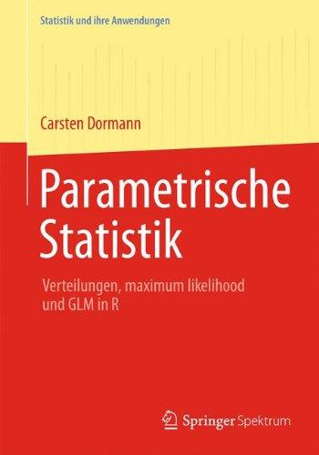

2 Literatur
Was ist gute Literatur? Immer schwer zu beurteilen. Im folgenden liste ich einige Literaturquellen auf. Zum einen basiert eine Menge von dem R Code auf Wickham (2016) zum Anderen möchtest du dich vielleicht nochmal rechts oder links weiter bilden. Du musst aber nicht um die Klausur bestehen zu können. Siehe es eher als ein Angebot.
Und daher hier nochmal gleich zu Anfang, es ist nicht notwendig mehr als das Skript durchzuarbeiten und bei den Übungen zu sein um die Klausur zu bestehen. Für deine Bachelorarbeit wirst du aber Programmieren in R können müssen.
Neben diesem Modul musst du vermutlich noch andere Module belegen. Deshalb hier eine Auswahl Literatur, die dir helfen mag. Zum einen ist die Literatur anders geschrieben und zum anderen sind dort andere Imhalte.
2.1 Parametrische Statistik

Dormann (2013) liefert ein tolles deutsches Buch für die Vertiefung in die Statistik. Insbesondere wenn du wissenschaftlich Arbeiten willst weit über die Bachelorarbeit hinaus. Dormann baut in seinem Buch eine hervorragende Grundlage auf. Das Buch ist an der Hochschule Osnabrück kostenlos über den Link zu erhalten.
2.2 R for Data Science

Wickham (2016) ist die Grundlage für die R Programmierung. Das Material von Wickahm findet sich kostenlos online unter https://r4ds.had.co.nz/ und https://www.tidyverse.org/. Wir werden uns hauptsächlich mit R wie es Wickham lehrt beschäftigen. Somit ist Wickham unsere Grundlage für R.
2.3 Practical Statistics for Data Scientists

Bruce (2020) schreibt ein Buch für den Anwender. Ohne Vorkenntnisse ist das Buch vermutlich etwas schwer zu lesen. Dafür bietet das Buch aber nach einem Statistikkurs sehr gute Anknüpfungspunkte Richtung maschinelles Lernen und somit der Klassifikation. Das Buch ist auch hier in der englischen Version und hier in der deutschen Version zu erhalten. Beide Links benötigen den Zugang über die Hochschule Osnabrück.
2.4 Data Science for Agriculture in R
Schmidt liefert auf der Webseite https://schmidtpaul.github.io/DSFAIR/index.html eine tolle Sammlung an experimentellen Designs bzw. Versuchsanlagen samt der Auswertung in R. Ohne Vorkenntnisse schwer zu verstehen. Sollte aber nach einem Kurs Statistik dann möglich sein. Gerne hier auch mich fragen, dann können wir gemeinsam das passende Design raussuchen und besprechen.
2.5 Odds & Ends

Am Ende dann noch eine Mathebuch von Weisberg zu finden unter https://jonathanweisberg.org/vip/. Eigentlich eher ein Buch über Wahrscheinlichkeiten und wenn ein Buch am Ende stehen muss, dann ist es dieses Buch. Ich finde es sehr spannend zu lesen, aber das ist dann vermutlich special intrest.